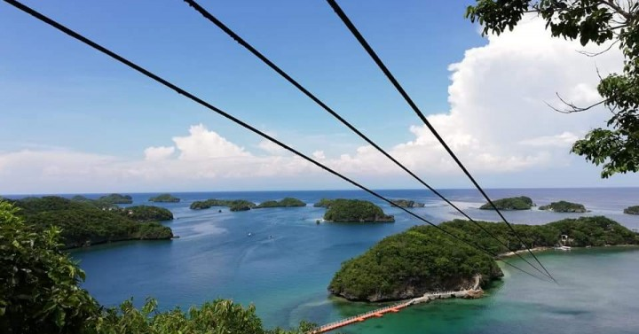
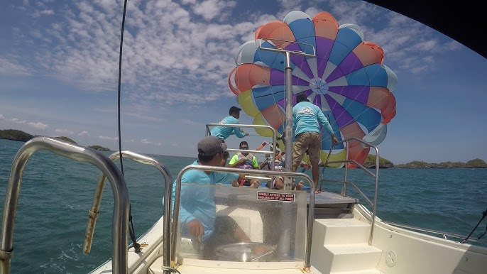
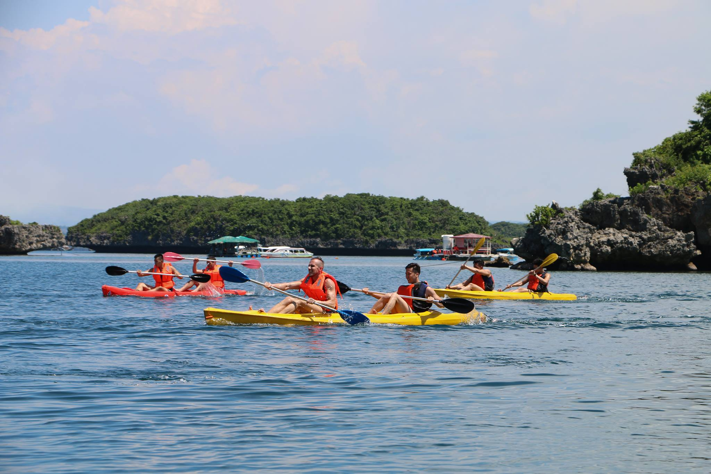

THE HUNDRED ISLANDS
NATIONAL PARK
ABOUT
The Hundred Islands known as "Hundred Precious Gems," is one of the top Philippine Countryside attraction. This fascinating group of over a hundred coral-based islets is located off the coast of Barangay Lucap, about 4 kilometers from the main town. While most of the islets lack significant plant life, the park draws both local and international tourists with its stunning natural beauty, ancient caves, and white-sand beaches. Several islands are named after national and local figures, such as Quezon Island, Marcos Island, and Governor's Island. For visitors, Children's Island, Governor's Island, and Quezon Island provide lodging options, including affordable Bahay Kubo (nipa hut) accommodations for budget travelers and a fully equipped guest house on Governor's Island for VIPs.
In the Hundred Islands National Park, Quezon Island, Governor's Island, and Children's Island are the main developed spots for tourism, offering activities like swimming, snorkeling, kayaking, hiking (Governor's), and picnicking, with Quezon Island being the most developed with facilities, while Marcos Island is known for its cave and Pilgrimage Island for religious visits. Key Developed Islands: Quezon Island: The most developed, featuring guest houses, gazebos, picnic areas, and water activities like helmet diving, kayaking, and zip-lining. Governor's Island: The largest, with a light-brown beach, cave, view deck, zip line (to Virgin Island), and hiking trails, including the iconic "horse's foot" rock formation. Children's Island: A family-friendly spot, also offering swimming and island hopping. Marcos Island: Known for its underwater cave, perfect for snorkeling and diving. Pilgrimage Island: A significant site for Visita Iglesia during Holy Week, featuring the Stations of the Cross. Activities: Water Sports: Swimming, snorkeling, kayaking, helmet diving. Adventure: Hiking, zip-lining (Governor's to Virgin Island). Sightseeing: View decks, caves, unique rock formations, coral gardens. Relaxation: Sunbathing, picnicking.
Reasons why people should go there:
The Hundred Islands offers a captivating escape into nature's artistry. Scattered like "precious gems" across the sea near Barangay Lucap, this unique cluster of over a hundred coral-based islets is a best Philippine experience. Beyond the sheer novelty of island-hopping among so many landforms, visitors are drawn to the pristine white beaches, perfect for sunbathing, and the chance to explore intriguing primeval caves. The park balances natural exploration with convenience, offering accommodation options on key islands like Governor's and Children's, ensuring every traveler, from budget backpacker to VIP, finds their ideal base for discovering this unforgettable coastal marvel.
Best time to visit:
- Peak Season (December to May): Sunny skies, warm temperatures, calm seas.
- Shoulder Months (May or October): Fewer crowds, possibly lower rates, occasional showers.
HISTORY & FACTS
The islands are believed to be around two million years old, formed during the Pleistocene epoch. They are actually ancient coral reefs that were part of the seabed of an ancient sea. Lowering sea levels exposed them to the surface.
Declared the first national park in the Philippines by former President Manuel L. Quezon on January 18, 1940, under Presidential Proclamation No. 667.
FACTS:
- 124 islands at low tide, 123 at high tide.
- Many have mushroom-like shapes due to erosion.
- Only a few developed for tourism: Governor's, Quezon, Children's, Pilgrimage.
- Steeped in folklore: giant's tears, warring chieftains.
- Also called Kapulo-puloan or Taytay-Bakes.
- Recognized as National Geological Monument.
HOW TO GET THERE (From Dagupan)
STEP 1: Dagupan to Alaminos City (Bus)
- Provincial Bus (Five Star, Victory Liner)
- Travel Time: 1-1.5 hours
- Fare: ₱170 - ₱310
- Alight at Alaminos City Bus Terminal
STEP 2: Alaminos to Lucap Wharf (Tricycle)
- Travel Time: 15-20 minutes
- Fare: ₱15 - ₱100 depending on type
STEP 3: Lucap Wharf to The Hundred Islands (Boat)
- Day Tour Registration Fee: ~₱120
- Refundable Trash Deposit: ~₱200
- Boat Rental: Small ₱1,400 | Medium ₱1,800 | Large ₱2,000
ACTIVITIES
Hundred Islands National Park offers a variety of activities. Optional activities have separate fees. Visitors are responsible for paying all optional activity fees directly.

ZIPLINE
Experience the breathtaking 546m island-to-island zipline from Governor's Island to Virgin Island.
Rates: Quezon Island Php 100/jump, Lopez Island Php 250/jump

PARASAILING
Soar 600-1500 feet above the sea and enjoy a breathtaking aerial view of the 123 islands. Solo or dual rides available.
Rates: Solo - Php 2000, Dual - Php 3000

KAYAKING
Island-to-island kayaking adventure, perfect for friends, family, or team-building activities.
Rate: Php 250/hour (2 pax)
<<<<<<< HEAD

=======

>>>>>>> ebc7f01 (Updated website files)
BANANA BOAT RIDE
Enjoy a thrilling ride around the islands with friends and family.
Rate: Php 250/person (Minimum 6 pax)
<<<<<<< HEAD

=======

>>>>>>> ebc7f01 (Updated website files)
SNORKELING
Explore the vibrant underwater world and coral gardens at Quezon Island.
Rate: Php 150/person
<<<<<<< HEAD

=======

>>>>>>> ebc7f01 (Updated website files)
JET SKI
Feel the adrenaline rush as you speed through the pristine waters of Hundred Islands.
Rates: 15 mins Php 1000, 30 mins Php 2000

CLIFF DIVING
Jump from the cliffs of Imelda Cave, Marcos Island, and swim through the cave opening. Staff assist during high tide.
Rates: Life vest rental - Php 50/pc (required)
PERSONAL REVIEWS
STEPHANIE: I haven't been to Hundred Islands yet, but based on everything I've seen and heard from other travelers, it really seems like a place worth visiting. The photos and reviews make it look peaceful and exciting at the same time clear blue water, clean islands, and a lot of activities like snorkeling, kayaking, and exploring viewpoints. What I really like is that many people say the area is well-maintained and budget-friendly, which makes it even more inviting for someone planning a first visit. I’m honestly looking forward to experiencing it myself soon especially the island-hopping part and seeing the views in person instead of just online. It feels like the kind of destination where you can relax, enjoy nature, and create good memories.
JANILA:
As someone from Binmaley, I've always felt lucky that the Hundred Islands is just a short ride away and after visiting three times, I can say that the experience never loses its charm. Every trip feels different, and the beauty of the islands still amazes me. Though the place gets crowded during peak season, the atmosphere still feels welcoming, and the locals are friendly. The whole experience feels close to home literally and emotionally. For me, Hundred Islands isn’t just a tourist spot; it’s a reminder of the natural beauty we Pangasinenses can be proud of. I’d say Hundred Islands is worth visiting not just once, but again and again.
YVINT: As a local from Alaminos, I grew up going to Hundred Islands because our family reunions and our church anniversaries were usually held there. I’ve only visited around three islands and tried the banana boat before, but I still enjoyed it. The place has nice views and clear water. It can get crowded sometimes, but it’s still a good spot to relax and spend time with family. Even with my simple experiences there, I still think it’s a place worth visiting.
MERABEL: I haven't been to Hundred Islands yet, but I really want to go. The place looks beautiful with its many small islands surrounded by clear blue water. It seems peaceful, perfect for swimming, snorkeling, and exploring caves. I’m most excited to try the zipline because it looks fun and gives a great view of the islands from above. I imagine feeling the wind while seeing the wide ocean beneath me. Hundred Islands feels like a simple but amazing escape where I can relax, enjoy nature, and try new adventures. I hope to visit soon and experience everything for myself.
KHLEYA: I haven't been to Hundred Islands yet but I can already tell how beautiful it is from the pictures I’ve seen online. The clear blue water and the many small islands look so peaceful and breathtaking. We actually had plans to go there before, and I was really excited because I had been looking forward to the trip for a long time. Sadly, it didn’t happen but I still hope that someday we’ll be able to visit. I believe it would be an unforgettable experience and I can’t wait for the time when I can finally see it in person.